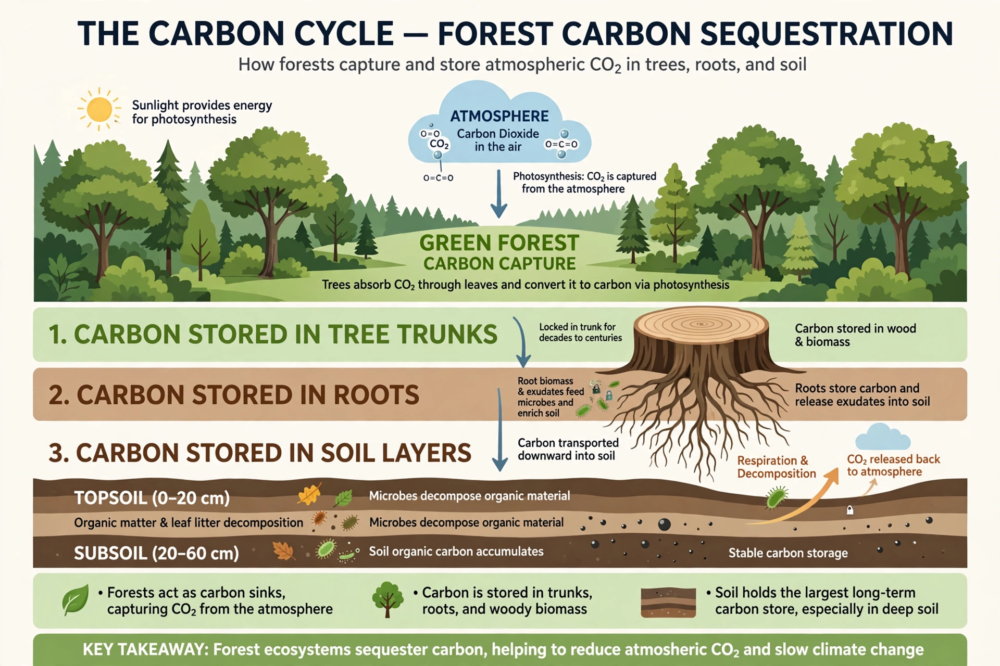

| Carbon sequestration | |
|---|---|
 | |
| Purpose | Long-term storage of carbon to mitigate climate change |
| Main reservoirs | Vegetation, soils, oceans, geological formations |
| Related approaches | Carbon capture and storage, afforestation, biochar, direct air capture |
Carbon sequestration is the process of capturing and storing atmospheric carbon dioxide (CO2) for the long term, in order to slow or reverse the build-up of greenhouse gases and mitigate climate change. It occurs naturally through biological, chemical and physical processes in the carbon cycle — for instance, as forests grow, soils accumulate organic matter, and oceans absorb CO2 — and can be enhanced deliberately by human technology and land management.
The largest active carbon stores are the oceans (about 38,000 gigatonnes of carbon), geological formations and fossil fuels, soils (roughly 1,500–2,400 Gt in the upper metres, more than the atmosphere and vegetation combined) and terrestrial vegetation (about 450–650 Gt). Photosynthesis by forests, grasslands, wetlands and marine phytoplankton continuously moves carbon from the atmosphere into these pools; peatlands are especially dense carbon stores. Natural sinks currently absorb roughly half of humanity's annual CO2 emissions, split between land and ocean.
Afforestation and reforestation, improved forest management, agroforestry, soil carbon enhancement (for example reduced tillage, cover cropping and grazing management), wetland and seagrass restoration, and the production of biochar — charcoal made by pyrolysis of biomass and added to soil, where it can persist for centuries to millennia.
Carbon capture and storage (CCS) captures CO2 from power plants, industrial facilities or directly from the air (direct air capture, DAC) and injects it into deep geological formations such as depleted oil and gas reservoirs or saline aquifers for permanent storage. Enhanced weathering spreads crushed silicate rocks that react with CO2 to form stable carbonates, and ocean-based approaches include alkalinity enhancement and iron fertilisation, the latter being controversial because of ecological risks.
Key issues include permanence (stored carbon must not leak back), measurement and verification, cost, energy requirements of technological routes, land-use competition for biological routes, and the risk that reliance on future sequestration delays emission reductions ("mitigation deterrence"). Scientific assessments such as those of the IPCC nonetheless include substantial carbon removal in most scenarios that limit warming to 1.5–2 °C.